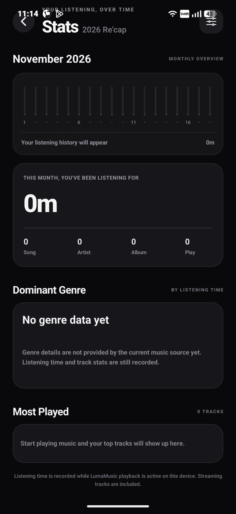
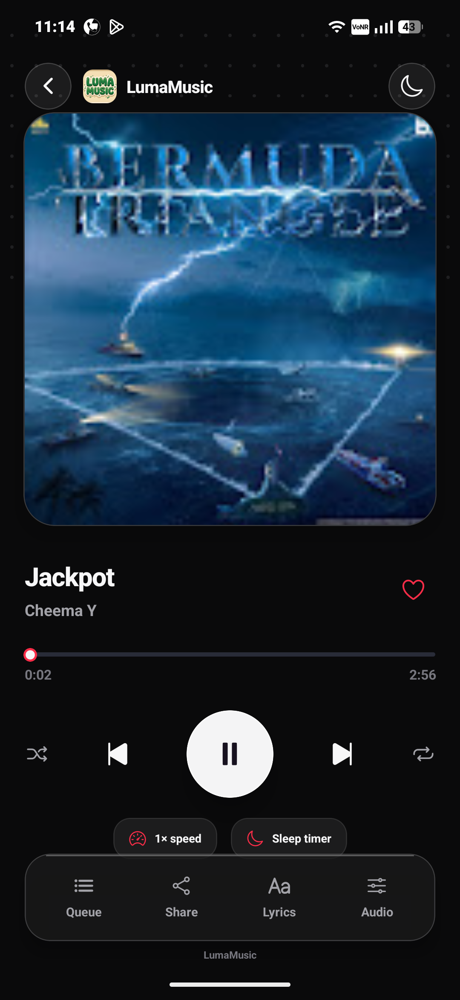
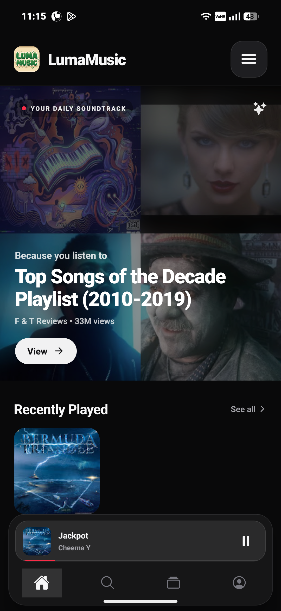

A library that feels like yours.
Keep your saved music and playlists close. Your collection, organised around what you actually listen to.
AN INDEPENDENT MUSIC PLAYER BY PAUZEDEVS
A listening space for the tracks you love, the playlists you build, and everything you want to hear next.



LumaMusic brings discovery, your personal library and playback together in one place. Find something new, save what stays with you, and keep the next track close.
OPEN SOURCE ON GITHUB ↗02 / YOUR MUSIC, TOGETHER
Search for tracks and artists, collect favourites in your library, and make playlists for every version of your day.
Keep your saved music and playlists close. Your collection, organised around what you actually listen to.
See what's playing, manage playback and shape what comes next without losing the moment.
LumaMusic is an independent project by PauzeDevs. Follow development, explore the code and see what's changing.
EXPLORE THE REPOSITORY ↗Not concepts or renders. A few glimpses of LumaMusic as it is.
EXPLORE THE APP
Choose a screen to take a look.
PAUZEDEVS PRESENTS
LumaMusic. An independent music player, built one iteration at a time.
Get LumaMusic ↗